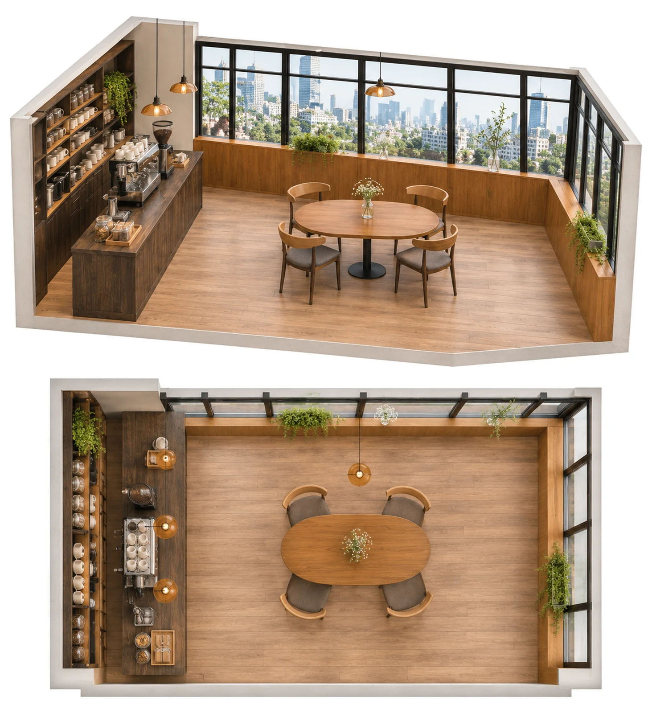

一集
剧本与分镜
完整剧本与分镜脚本
下载原文环大陆地区短剧 · 一集 原片时长 130.17 秒 故事梗概 窗前两人对坐。女生话不多，男生反复解释并试着读懂她的沉默。女生从面无表情到露出笑意，男生却越发局促。在将说未说的停顿里，二人的距离悄悄拉近。 人物 红衣女生主动提出想听真话；灰衣男生从试探到直说；窗边顾客为对坐长镜头提供日常背景。 场景 全片重建为同一间落地窗咖啡馆，正打背景为吧台，反打背景为窗景，左右轴线围绕圆桌。 道具用途 桌椅固定人物空间，水杯和纸巾为男生紧张时的手部动作，马克杯供女生停顿时握住，花瓶作前景，发夹贯穿造型。 剧本与分镜 按原片抽帧重建的复拍制作稿。画面未能确认的对白、音效与镜头节奏按下表执行。 | 镜号 | 画面内容 | 镜头视角 | 使用资产 | 动作描述 | 台词/旁白 | 音效 | 单镜头时长 | | 01 | 两人隔着花瓶相对而坐 | 窗侧双人全景 | 红衣女生、灰衣男生、窗边顾客、落地窗咖啡馆、桌椅 | 男生看她一眼，她把手搭到杯边 | — | 咖啡馆轻声、杯碰桌 | 6.00秒 | | 02 | 女生打量男生，他低头握住水杯 | 近景正反打 | 两位主角、透明杯与水、粉色发夹 | 女生偏头，他在杯沿停了片刻 | 女生：你今天怎么突然约我出来？ | 轻微室内底音 | 8.00秒 | | 03 | 女生坐直，决定让他先开口 | 过肩中近景 | 红衣女生、米白直筒马克杯、白花玻璃小瓶 | 手离开杯把，目光不避开 | 女生：有话你就直接说。 | 杯把轻擦 | 9.00秒 | | 04 | 男生抬手解释 | 女生肩后的中景 | 灰衣男生、透明杯与水、白色纸巾 | 用一只手比画，另一只手落在纸巾边 | 男生：我在想，前几天是不是说得不太好。 | 木面轻触 | 10.00秒 | | 05 | 女生眼睛阖上，男生还在寻找说法 | 脸部近景切男生中景 | 两位主角、粉色发夹 | 女生闭眼瞬间吸气，男生把手从桌上抬起 | 男生：我的意思是，我在意你怎么想。 | 低室内声 | 7.00秒 | | 06 | 男生的表情突然认真 | 脸部近景 | 灰衣男生 | 他说完等回应，下颌僵住 | — | 半拍留白 | 9.00秒 | | 07 | 女生双手靠在杯边听他 | 过肩中景切脸部特写 | 红衣女生、米白直筒马克杯、白花玻璃小瓶 | 她握住杯把，抬眼等下一句 | 女生：那你希望我怎么回答？ | 杯沿轻响 | 9.00秒 | | 08 | 男生张开手，把话往回收 | 侧向越肩近景 | 灰衣男生、白色纸巾 | 两手张开又靠拢，身体往桌前挪 | 男生：你随时都可以告诉我，我会听。 | 衣袖摩擦 | 12.00秒 | | 09 | 女生侧头追问 | 正反打切近景 | 两位主角 | 女生略歪头，男生食指抬起后又收回 | 女生：那就先说你的真心话。 | 话尾落在环境声上 | 13.00秒 | | 10 | 两人沉默几秒，男生脸红 | 窗边双人全景接男生中近景 | 落地窗咖啡馆、两位主角、桌椅 | 有意保持目光错开，男生手指压住纸巾 | — | 时远时近的杯盘声 | 11.00秒 | | 11 | 女生笑了，男生反而更紧张 | 交叉近景 | 红衣女生、灰衣男生 | 女生先弯嘴角，他瞪大眼，随即收敛表情 | 女生：原来你也会紧张啊。 | 柔和短音乐 | 11.00秒 | | 12 | 两人都露出笑意 | 脸部反打转女生中景 | 两位主角、花瓶和马克杯 | 男生低头笑，女生放松肩膀 | 男生：因为是你，我才会这样。 | 环境声淡入 | 12.00秒 | | 13 | 男生放下手，继续看着女生 | 中景推到男生正脸 | 灰衣男生、红衣女生、透明杯与水 | 男生揉了一下脸，手放回桌边，视线抬起 | 男生：我还有一句话想说。 | 轻停顿后切出 | 13.17秒 | 时长合计 130.17 秒
制作资产
角色资产 · 6 项


场景资产 · 1 项
